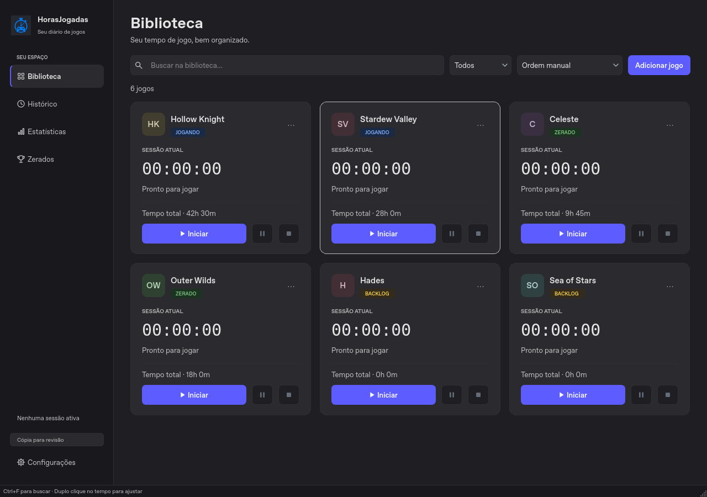
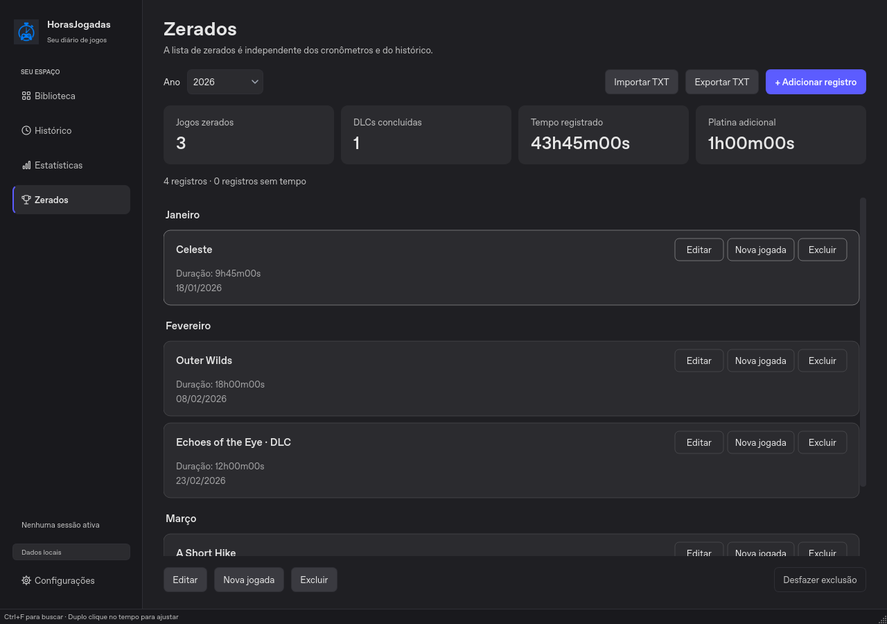

Seu tempo, bem contado
Inicie, pause e retome. Ajuste o tempo com atalhos e salve cada sessão no histórico.
SEU DIÁRIO DE JOGOS · VERSÃO __VERSION__
Do primeiro minuto ao último chefe. Cronometre suas partidas, acompanhe sua biblioteca e celebre cada jogo zerado — tudo no seu computador.
Sem conta. Sem assinatura. Sem instalar Python.

MENOS PLANILHAS. MAIS JOGOS.
O essencial para acompanhar o que você joga, sem transformar seu hobby em trabalho.
Inicie, pause e retome. Ajuste o tempo com atalhos e salve cada sessão no histórico.
Jogando, Zerado, Backlog ou Dropado. Busque, filtre e encontre seu próximo jogo.
Zerados por ano e mês, novas jogadas, DLCs, observações e horas extras de platina.
Horas por período, sequência de dias e jogos mais jogados. Veja como sua biblioteca evolui.
Exporte histórico em CSV e sua lista de zerados em TXT, com importação e prévia.
Arquivos locais, backups completos e recuperação de sessões. Sem conta ou telemetria.
MAIS DO QUE UMA LISTA
Organize suas conclusões por mês, marque DLCs e registre aquela segunda jogada. O resumo anual reúne tudo sem inventar tempos que você não informou.
Quatro estilos de aparência, incluindo a paleta original cinza e roxo.

PRONTO PARA A PRÓXIMA PARTIDA?
O instalador do Windows cuida da instalação. No Linux, extraia o pacote pronto.
Adicione um título, clique em Iniciar e use Pausar ou Encerrar quando quiser.
Suas sessões ficam salvas. Consulte o histórico e registre as conclusões em Zerados.
ESCOLHA SEU SISTEMA
Versão __VERSION__ · download direto pelo GitHub Releases.
Windows 10 ou 11 · 64 bits
Baixar instaladorRecomendado. Abra o arquivo e siga a instalação. Não precisa de Python.
Prefere sem instalar? Baixar ZIP portátil →x86_64 · Ubuntu 22.04+ ou compatível
Baixar pacote LinuxExtraia e execute o arquivo HorasJogadas em uma sessão gráfica. Não precisa de Python.
tar -xzf HorasJogadas-Linux-x86_64.tar.gz
cd HorasJogadas
./HorasJogadasVerificar SHA-256·Histórico de versões·Todos os arquivos·Código-fonte
ANTES DE DAR O PLAY
Não nos pacotes prontos desta página. O instalador e o ZIP do Windows, assim como o pacote Linux, já levam o necessário para executar o aplicativo.
No Windows, em %APPDATA%\HorasJogadas. No Linux, em ~/HorasJogadas. A pasta dos registros é separada da instalação; desinstalar o aplicativo não remove seus dados.
A versão 3 reutiliza a mesma pasta oficial e os formatos JSON. Antes da primeira leitura, cria um backup completo em uma pasta vizinha chamada HorasJogadas-Backups-de-Versao. Feche a versão antiga antes de abrir a nova e mantenha também uma cópia externa dos seus dados.
Não para registrar suas partidas. Os dados são locais e não há telemetria. A consulta de novas versões ao abrir o app pode ser desativada nas Configurações. Ela não envia sua biblioteca. A instalação de atualizações sempre exige sua confirmação.
Baixe o novo instalador ou pacote nesta página. Feche o app e instale a atualização. Seus registros permanecem na pasta de dados, separada dos arquivos do programa.